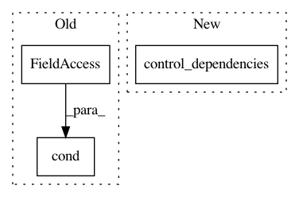

ee950b503eeed5aca3747a4bcf2a40f624b743a0,tensorforce/core/optimizers/synchronization.py,Synchronization,tf_step,#Synchronization#Any#Any#Any#,58
Before Change
sync_frequency = self.sync_frequency.value()
skip_sync = (time - self.last_sync < sync_frequency)
return self.cond(pred=skip_sync, true_fn=no_sync, false_fn=apply_sync)
After Change
assert all(
util.shape(source) == util.shape(target)
for source, target in zip(source_variables, variables)
)
timestep = Module.retrieve_tensor(name="timestep")
def apply_sync():
update_weight = self.update_weight.value()
In pattern: SUPERPATTERN
Frequency: 3
Non-data size: 3
Instances
Project Name: reinforceio/tensorforce
Commit Name: ee950b503eeed5aca3747a4bcf2a40f624b743a0
Time: 2019-01-21
Author: alexkuhnle@t-online.de
File Name: tensorforce/core/optimizers/synchronization.py
Class Name: Synchronization
Method Name: tf_step
Project Name: reinforceio/tensorforce
Commit Name: ade4956483b34a295a0555886ee853f12998f8ff
Time: 2020-02-02
Author: alexkuhnle@t-online.de
File Name: tensorforce/core/models/model.py
Class Name: Model
Method Name: api_reset
Project Name: galeone/dynamic-training-bench
Commit Name: 5606f8252aafb57777d6e3b9154ab2256aabd72b
Time: 2016-10-27
Author: nessuno@nerdz.eu
File Name: train_decaying_keep_prob.py
Class Name:
Method Name: keep_prob_decay